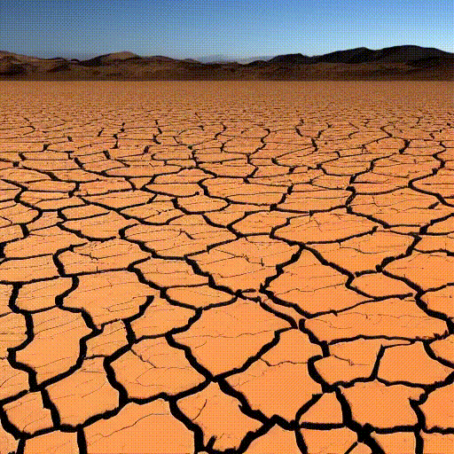
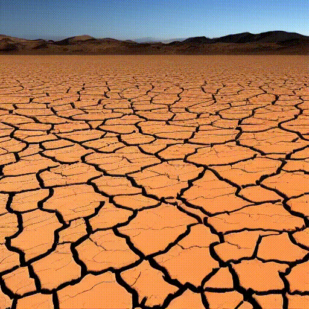

06
EYE to AI
[2022-23] [Data Visualization]
Innovations in the digital sphere have made Artificial Intelligences new actors of the communication landscape. What if txt-to-img AIs were in charge of producing climate change visuals?
In this project we used Stable Diffusion – an open source txt-to-img AI – to question the relationship between humans and machines in the context of climate change imagery.
EYE to AI brings to light the biases and stereotypes on climate change that txt-to-img AI inherits from society, using the machine itself as a tool to expose its inherent issues while joining the wide debate on the myth of neutrality in technology.
Testing Stable Diffusion, we generated 500 images starting from prompts that ranged among climate change related topics and defined clusters of biases based on observed patterns.
↗ Report
↗ Website (desktop only)
 
